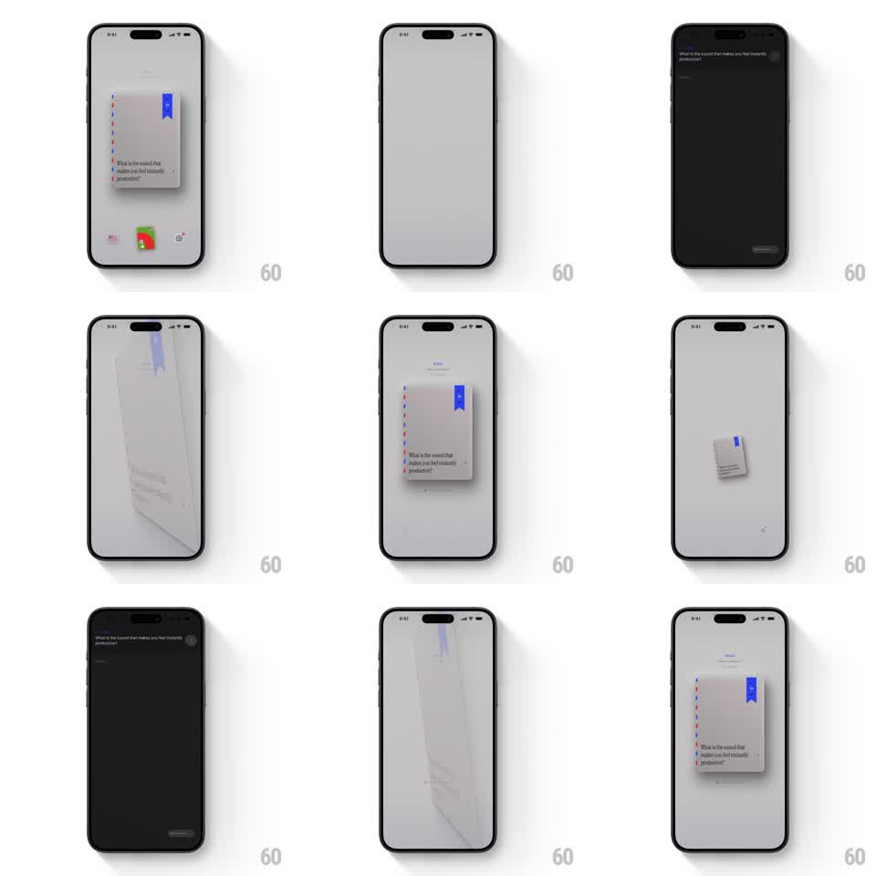

Media
Frame-by-frame

Rebuild this interaction 1:1: the Lost Post card-to-editor transition - the airmail-edged notebook card flips in 3D and scales up into a fullscreen dark writing editor, then flips back when closed.

Rebuild this interaction 1:1: the Lost Post card-to-editor transition - the airmail-edged notebook card flips in 3D and scales up into a fullscreen dark writing editor, then flips back when closed.
## Integration
Integration: stack-agnostic spec - springs given as stiffness/damping, timed motions as duration + curve; map every value to your framework and animation library of choice.
## Scene
A light grey canvas with a small centered notebook card - airmail stripes down the left edge, a blue ribbon bookmark, the prompt "What is the sound that makes you feel instantly productive?" - and stamp-like icons at the bottom. The destination: a near-black fullscreen editor with the same prompt at the top and a text field ("Write...").
## Motion spec
Pattern: 3D flip-and-scale shared-element transition from card to editor.
- Tap the card: it lifts (shadow deepens, scale 1 -> 1.03, 120ms), then rotates on Y 0 -> 90 degrees (250ms, ease-in) - the airmail edge leads the turn - while scaling toward fullscreen.
- Past 90 degrees the card's back face is the editor's dark surface: rotation continues 90 -> 0 (250ms, ease-out) as the surface expands to fill the screen (border-radius 12 -> 0).
- The prompt text is a shared element: it holds its position through the flip, crossfading from card styling to editor styling over the middle 200ms.
- The editor's input field and bottom bar fade up after the flip lands (translateY 12 -> 0, 250ms).
- Closing reverses the exact sequence: the editor flips and shrinks back into the card on the canvas (same timings mirrored).
## Calibration
- The flip axis sits at the card's vertical center; perspective ~1000px so the turn has depth without distortion.
- One continuous motion - no pause at the 90-degree edge.
## Reduced motion
Card crossfades to the editor while scaling (300ms), no rotation.
## Don't miss
- The blue bookmark stays attached to the card face through the flip - it exits with it.
- The background canvas dims 30% during the flip so the card reads as lifting toward you.